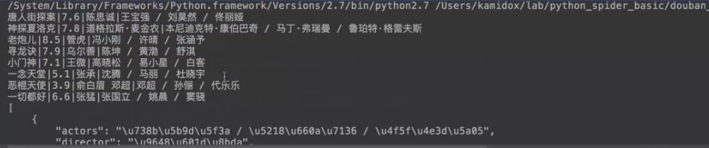
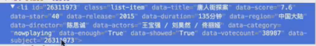
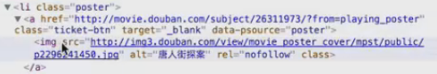
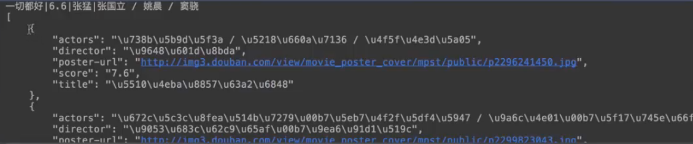
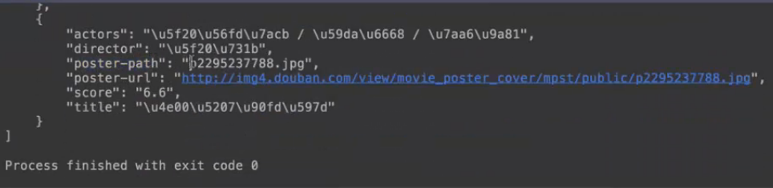
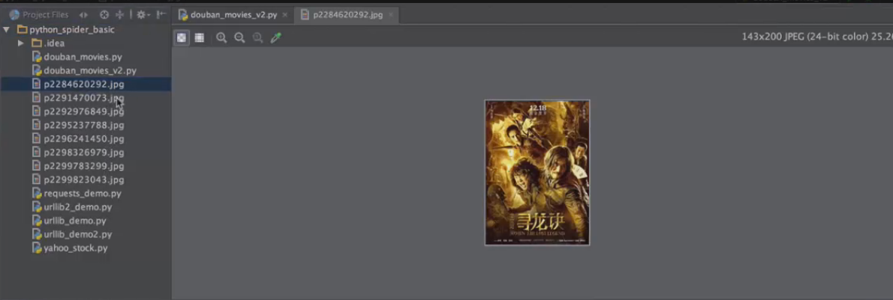
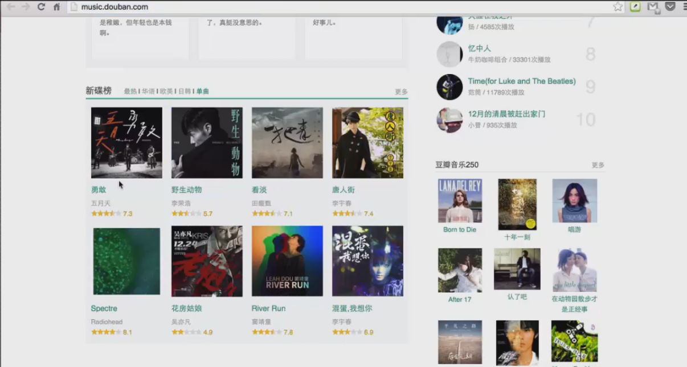

python Requests实例
用Requests重构豆瓣电影爬虫
1）用Requests重构代码
2）增加功能：下载每个电影的海报的图片
热播电影数据格式：
使用Chrome开发者工具查看豆瓣热播电影格式
示例：
使用Requests重构代码
代码如下：
# -*- coding: utf-8 -*-
import requests
from HTMLParser import HTMLParser
class MovieParser(HTMLParser):
def __init__(self):
HTMLParser.__init__(self)
self.movies = []
def handle_starttag(self, tag, attrs):
def _attr(attrlist, attrname):
for attr in attrlist:
if attr[0] == attrname:
return attr[1]
return None
if tag == 'li' and _attr(attrs, 'data-title') and _attr(attrs, 'data-category') == 'nowplaying':
movie = {}
movie['title'] = _attr(attrs, 'data-title')
movie['score'] = _attr(attrs, 'data-score')
movie['director'] = _attr(attrs, 'data-director')
movie['actors'] = _attr(attrs, 'data-actors')
self.movies.append(movie)
print('%(title)s|%(score)s|%(director)s|%(actors)s' % movie)
if __name__ == '__main__':
url = 'http://movie.douban.com/nowplaying/xiamen/'
movies = nowplaying_movies(url)
import json
print('%s' % json.dumps(movies, sort_keys=True, indent=4, separators=(',', ': ')))
运行结果，是成功的

增加图片的下载功能，我们需要先去分析数据的格式，我们先去看这个图片的格式。
点击图片，我们看一下这个图片在哪里。

实际上是由这个HTML来表达的
可以看到，这是我们的电影数据。这个爬虫是解析这个li的标签去获取这个数据的。

我们在解析，下载图片的时候，我们要确保这个图片是在这个电影标签下面的，否则这个里面可能会有很多其他的图片，所以，这里面需要我们去过滤这个图片，也就是说，我们只下载这个li下面的img的图片，那这个图片的url就是我们要去获取的url。

我们看一下代码怎么做。
# -*- coding: utf-8 -*-
import requests
from HTMLParser import HTMLParser
class MovieParser(HTMLParser):
def __init__(self):
HTMLParser.__init__(self)
self.movies = []
self.in_movies = False //标示我们正在解析的电影是在这个数据里面的
def handle_starttag(self, tag, attrs):
def _attr(attrlist, attrname):
for attr in attrlist:
if attr[0] == attrname:
return attr[1]
return None
if tag == 'li' and _attr(attrs, 'data-title') and _attr(attrs, 'data-category') == 'nowplaying':
movie = {}
movie['title'] = _attr(attrs, 'data-title')
movie['score'] = _attr(attrs, 'data-score')
movie['director'] = _attr(attrs, 'data-director')
movie['actors'] = _attr(attrs, 'data-actors')
self.movies.append(movie)
print('%(title)s|%(score)s|%(director)s|%(actors)s' % movie)
self.in_movies = True //表示我们已经解析到了这个电影
if tag == 'img' and self.in_movies: //解析img标签并且在电影数据里面才会关注
self.in_movies = False //将电影设置为false
src = _attr(attrs,’src’)
movie = self.movies[len(self.movies) - 1] //获取刚刚append进去的电影
movie['cover-url'] = _attr(attrs, 'src')
def nowplaying_movies(url):
headers = {'User-Agent': 'Mozilla/5.0 (Windows NT 6.1; Win64; x64) AppleWebKit/537.36 (KHTML, like Gecko) Chrome/47.0.2526.73 Safari/537.36'}
s = requests.get(url, headers=headers)
parser = MovieParser()
parser.feed(s.content)
return parser.movies
if __name__ == '__main__':
url = 'http://movie.douban.com/nowplaying/xiamen/'
movies = nowplaying_movies(url)
import json
print('%s' % json.dumps(movies, sort_keys=True, indent=4, separators=(',', ': ')))
运行结果，这个我们post的url，封面数据就有了。

这个是我们的封面。
第一个电影
第二个电影
我们现在的爬虫只是获取到这个url，那接下来的任务，我们需要把这个图片给它下载下来，这个是时候，我们已经获取打了这个url，获取数据就比较简单了。
代码如下：
# -*- coding: utf-8 -*-
import requests
from HTMLParser import HTMLParser
class MovieParser(HTMLParser):
def __init__(self):
HTMLParser.__init__(self)
self.movies = []
self.in_movies = False
def handle_starttag(self, tag, attrs):
def _attr(attrlist, attrname):
for attr in attrlist:
if attr[0] == attrname:
return attr[1]
return None
if tag == 'li' and _attr(attrs, 'data-title') and _attr(attrs, 'data-category') == 'nowplaying':
movie = {}
movie['title'] = _attr(attrs, 'data-title')
movie['score'] = _attr(attrs, 'data-score')
movie['director'] = _attr(attrs, 'data-director')
movie['actors'] = _attr(attrs, 'data-actors')
self.movies.append(movie)
print('%(title)s|%(score)s|%(director)s|%(actors)s' % movie)
self.in_movies = True
if tag == 'img' and self.in_movies:
self.in_movies = False
movie = self.movies[len(self.movies) - 1]
movie['cover-url'] = _attr(attrs, 'src')
_download_poster_cover(movie) //下载电影的封面，把这个电影给它传进来
def _download_poster_image(movie): //定义一个下载电影封面的函数
src = movie[‘poster-url’] //取出它的url
r = requests.get(src) //去获取这个url
fname = url.split('/')[-1] //从url里面获取这个文件名
with open(fname, 'wb') as f: //应答的内容写进去并且使用二进制
f.write(s.content)
movie['poster-path'] = fname
def nowplaying_movies(url):
headers = {'User-Agent': 'Mozilla/5.0 (Windows NT 6.1; Win64; x64) AppleWebKit/537.36 (KHTML, like Gecko) Chrome/47.0.2526.73 Safari/537.36'}
s = requests.get(url, headers=headers)
parser = MovieParser()
parser.feed(s.content)
return parser.movies
if __name__ == '__main__':
url = 'http://movie.douban.com/nowplaying/xiamen/'
movies = nowplaying_movies(url)
import json
print('%s' % json.dumps(movies, sort_keys=True, indent=4, separators=(',', ': ')))
运行结果，可以看到poster-path，而且文件是直接保存在当前目录下。

可以看到这里多了很多图片，这样我们就实现了在下载热播电影的同时又把这个电影的封面图片下载下来的一个简单的爬虫。

作业
豆瓣音乐
实现一个爬虫，获取新碟榜单曲
要求：
歌曲名称
歌手名字
豆瓣评分
解析单曲封面图片url并把图片下载下来
如下：这是一个豆瓣的音乐，这是个新碟榜，我希望去获取这个单曲，需要把这个音乐的名称，还有歌手的名称，豆瓣评分，以及封面图片都给它下载下来。

【本文由麦子学院独家原创，转载请注明出处并保留原文链接】